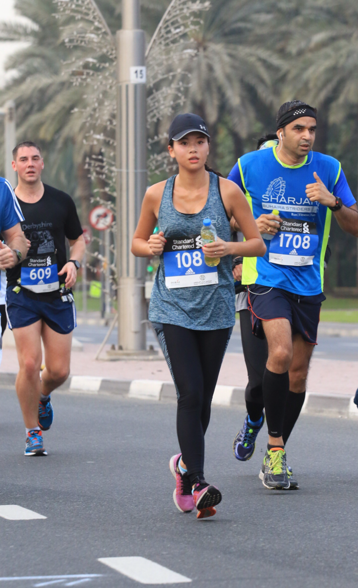

About
Facts that make me, me:
🏃🏻♀️ Ran 2 full marathons for charity (aiming for my 3rd in October 2019)
📱 Designed, developed and deployed an iOS application for children living with autism on the App Store. Checkout my app on the App Store *click here*(aiming to release new version in April 2019)
🎓 Enrolled in coding bootcamp course at UofT (aiming to graduate in July 2019)
🧾 Business graduate with an Accounting/Finance background
🥾 Thrill and adventure seeker
❓ Staying curious, delicately honest, and constantly looking for ways to improve
🗺️ Travelled to 20 countries in last 3 years
🍗 Deep love for deep fried chicken